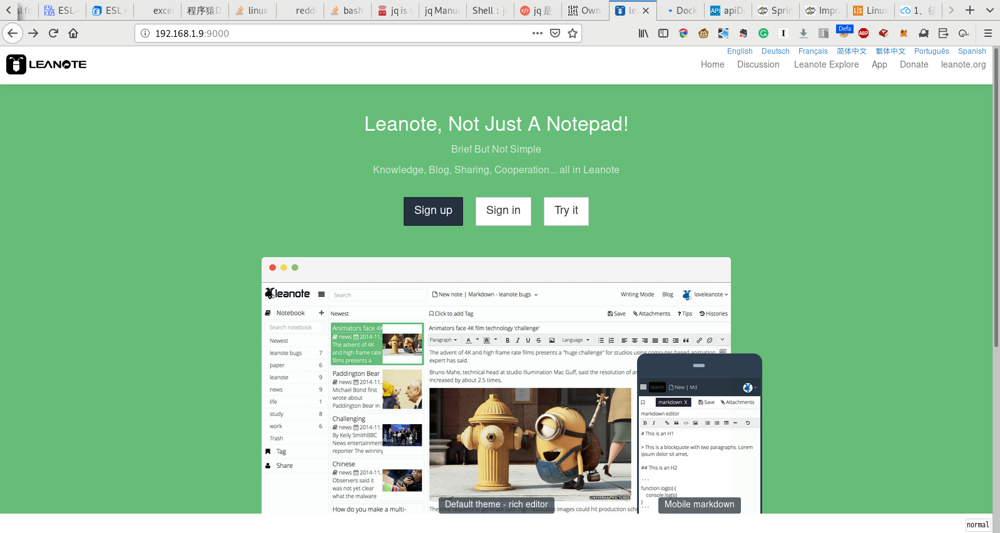

在OrangePi上使用Docker-Compose搭建蚂蚁笔记服务器
蚂蚁笔记 是一款很不错的云笔记应用，基本上可以用来代替Evernote. 最棒的是它可以很方便的自建服务器!
蚂蚁笔记服务端基于Mongo数据库，我们可以直接基于Mongo镜像来搭建自己的服务镜像，但是基于一个容器只跑一个进程的原则，推荐将Mongo数据库和蚂蚁笔记服务分开来。
创建docker-compose.yml,填入下面内容
version: "0.1" services: mongo: image: mongo volumes: - .data:/data leanote: build: leanote ports: - 9000:9000 links: - mongo
这里，我们直接使用docker官方提供的
mongo镜像来提供mongo数据库服务。leanote目录则存放构建蚂蚁笔记服务端的构建内容
在leanote目录下创建Dockerfile，填入下面内容
FROM mongo WORKDIR /root/ ADD run.sh /root/ ADD https://static.axboy.cn/leanote/leanote-linux-arm-v2.6.1.bin.tar.gz /root/leanote.tar.gz RUN tar -xzf /root/leanote.tar.gz -C /root/ && \ rm -f /root/leanote.tar.gz && \ chmod a+x /root/run.sh && \ chmod a+x /root/leanote/bin/run.sh RUN sed -i '/db.host/ s/127.0.0.1/mongo/' /root/leanote/conf/app.conf EXPOSE 9000 ENTRYPOINT CMD /root/run.sh
这里要说明的是:
- 虽然我们将mongo数据库和蚂蚁笔记服务端分开，但由于导入蚂蚁笔记初始脚本时需要用到mongorestore命令，因此这里依然基于mongo构建我们的镜像，只不过在后面通过 ENTRYPOINT 来禁止mongo服务的启动
- 蚂蚁笔记默认的配置的mongo主机是
127.0.0.1,这里需要修改为mongo,也就是docker-compose.yml中定义的mongo数据库的服务名 - 蚂蚁笔记默认通过
9000端口对外提供服务，因此这里通过EXPOSE 9000将9000端口暴露出去
在leanote目录下创建run.sh,填入下面内容
#!/usr/bin/env bash # 倒入初始数据 if ! echo "show dbs" |mongo --host mongo|grep leanote then mongorestore -h mongo -d leanote --dir /root/leanote/mongodb_backup/leanote_install_data/ fi bash /root/leanote/bin/run.sh
这个
run.sh很简单，就是先查看mongo主机上是否已经有了leanote数据库。 若没有这个数据库，则从/root/leanote/mongodb_backup/leanote_install_data/中导入初始化数据。 然后启动蚂蚁笔记的服务。这里需要注意的是:
mongo和mongorestore命令后指定的主机名mongo就是docker-compose.yml中定义的mongo数据库的服务名
- 运行
docker-compose up -d启动服务 - 访问
http://orangepi:9000就能看到蚂蚁笔记服务的web界面了 